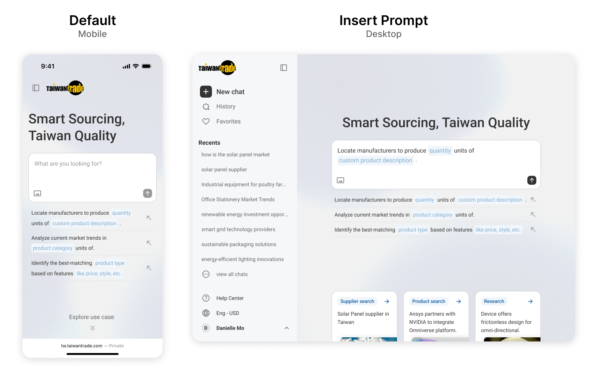
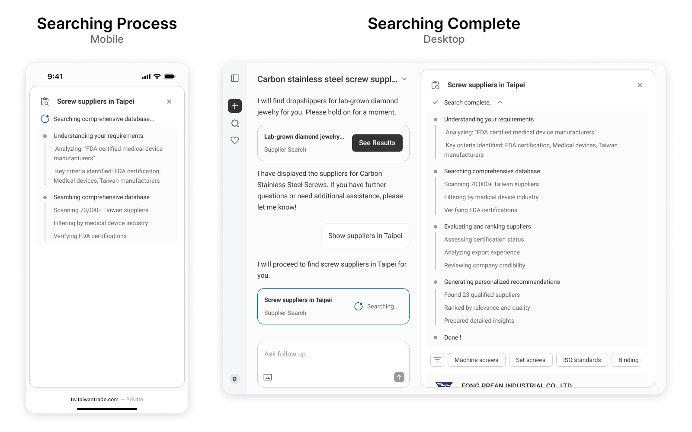
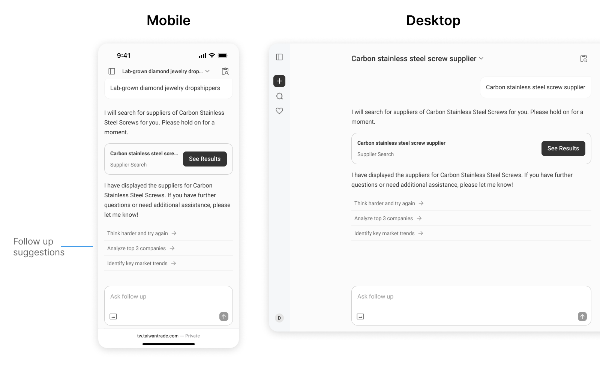
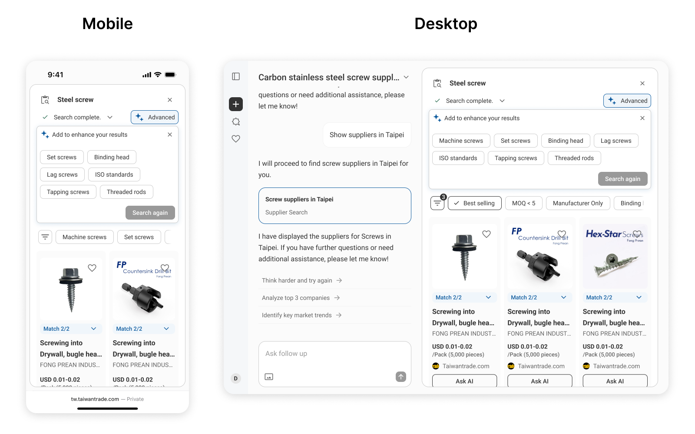
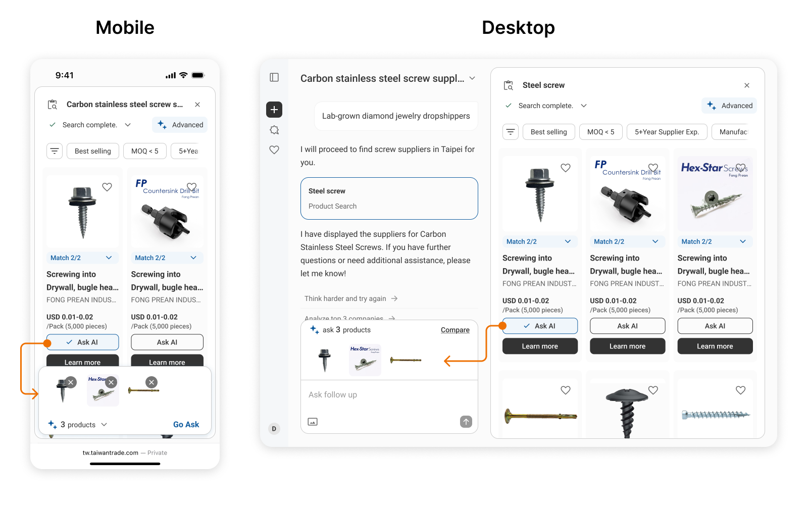

©2018 Daniel Tseng
Jul 2025 - Aug 2024
Brief:
Enables buyers to request complex and precise specifications through natural language, providing truly matching products, suppliers, and research reports. Ultimately guides users to inquire and report quotations on the Taiwantrade.
My role:
I was the sole designer for this project, handling everything from the initial phase to final delivery.
Project Challenges:
Needed a basic understanding of the connection between AI and its application process to ensure the planning was realistic.
Why this product
Clients saw results after implementing several AI features and now hope to further enhance buyers' efficiency in searching for products and suppliers on Taiwantrade. This goes beyond traditional keyword search, aiming to utilize an AI conversational service for simpler and more efficient searching, while accelerating the matchmaking benefits for both buyers and sellers.
First, Who are the users? What are the users' goals? What are the client's goals? What information do we possess?
Users
Clients of the Taiwantrade, potentially including domestic and international manufacturers. Generally, users here are primarily business procurement personnel, rarely general public.
User Goals
To find required products or cooperative suppliers.
Business Goals
To reduce the time it takes for buyers to find products, and to increase the matchmaking success rate.
Content
Taiwantrade holds a large volume of product and supplier information, with different types of content tagged differently for utilization.
The AI can assist in understanding the complexity of user needs and converting them into search results for the user. It can also generate different filtering criteria and product/supplier information, helping users better narrow the scope and understand the data.
In this stage, I first separate the platform service and the AI aspect for consideration. I start by understanding the user and attempting to solve their problem, while simultaneously considering how AI can assist to achieve maximum efficacy.
Based on the preliminary brainstorming, the concept for this platform is that users can first input their needs through the platform, and the AI will help search for the required products or suppliers.
The platform's main architecture will center on conversational dialogue, similar to most AI products on the market. This allows users to input their needs via natural language, which the AI analyzes to provide the necessary information.
From an architectural perspective, initiating a new conversation will remain a vital feature. Recent chats will take up significant room, and the remaining features, like chat history and favorites, are positioned as supporting tools.
Menu
My thinking is that the primary functions used by this platform's users will revolve around chats. Compared to switching between different functions, the ability to switch between different chat histories may be a more necessary feature. Therefore, I chose the sidebar menu.
As the first page seen by the user, we need to guide them to use the primary asking function and enable them to quickly understand its purpose.
Therefore, we added different scenarios for users to select and apply. Beyond this, we also offer prompts that users can bring into the chat. The idea is to allow users to fill in the blanks, making it simpler to construct a suitable Prompt.
For example, we can turn the product category within the predefined Prompt into a fill-in-the-blank field. Users would only need to complete the product type they are searching for to easily complete the Prompt.
Once the user submits a prompt from the homepage, they enter the chat flow. The process is similar to common conersational AI flows, with the difference being that our AI will determine whether the user's prompt suggests a need for assistance with product, supplier search, or report generation before providing a response.
There are several considerations when designing the dialogue flow:
Current Status: We divide the AI's status into three types. Thinking, Generating, and Searching. Displaying these statuses lets users know exactly what the AI is currently doing.
Trust: The user's trust in the AI correlates with how much they understand what the AI has done. The lack of trust partly stems from not understanding the AI's actions. Therefore, during the AI search process, we will list all the actions it performs, allowing the user to understand.
Follow-up: After every AI response, suggested follow-up actions will be generated to guide the user on what to do next. This helps users who are unfamiliar with the AI system to use it easily.
When the AI determines that the user's request requires product, supplier, or industry report search, the result area will expand to the right. Why the right-side format?
Most of the time, the user's line of sight moves from left to right. Therefore, the main needs or dialogue content will start on the left. Although this platform aims to help clients find products or suppliers, the primary task at the beginning is still dialogue, followed by the search results area on the right.
When search results appear, what should the user do if they want to learn more about a specific product or supplier?
We provide an "Ask AI" function that allows the user to incorporate a product or supplier into the dialogue context, and then ask the \text{AI} specific questions they have, or ask the AI to compare products or suppliers to distinguish the differences between various goods and vendors.

©2018 Daniel Tseng